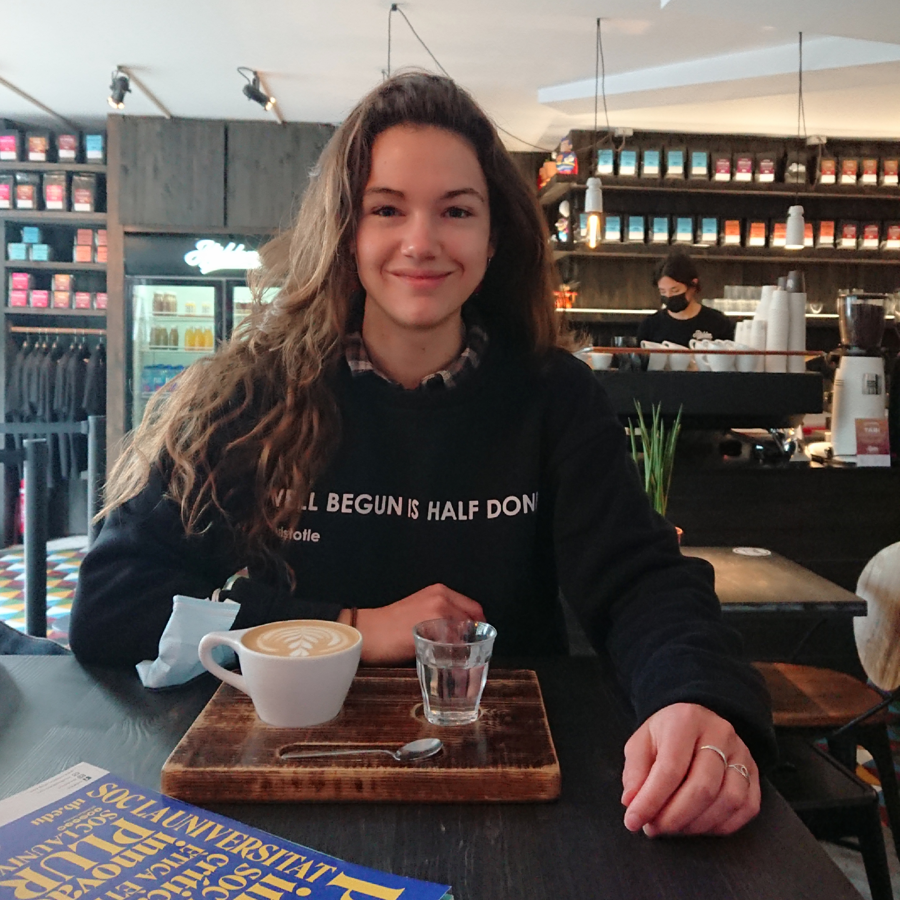

InterMineR Cytoscape
Summer internship at the Department of Genetics of the University of Cambridge developing visualization tools for InterMine project, which has driven to the final degree project.
Hello there! My name is Celia Sánchez. I'm a Biomedical Engineering student at University of Barcelona. Here you'll find the projects I've done and worked on.

Summer internship at the Department of Genetics of the University of Cambridge developing visualization tools for InterMine project, which has driven to the final degree project.
I get moved by projects with a meaningful impact on people's lives. I believe that without passion there is no victory, and with it and reason no project is small.
I am constantly learning and I do not have any perspectives to stop doing so. Especially, when it involves developing new skills and learning new concepts I am fully committed.
The development process entails to face difficulties continuously. The experience I have gathered helps me to over come them. I like to let my creative mind work in conjunction with the more analytical part of my brain.
I love working collaboratively and foster a climate of confidence through the feedback. Always using positive language, feedback leaves us open the mind to new possibilities.
I am very motivated to work with people with different backgrounds, where ideas are openly communicated. I believe in listening and relearning from others.
Finally, it is a big buzz word at the moment. Biomedical Engineering studies has crossed professional settings.
If you need any help or want to contact me, don't hesitate to do so!